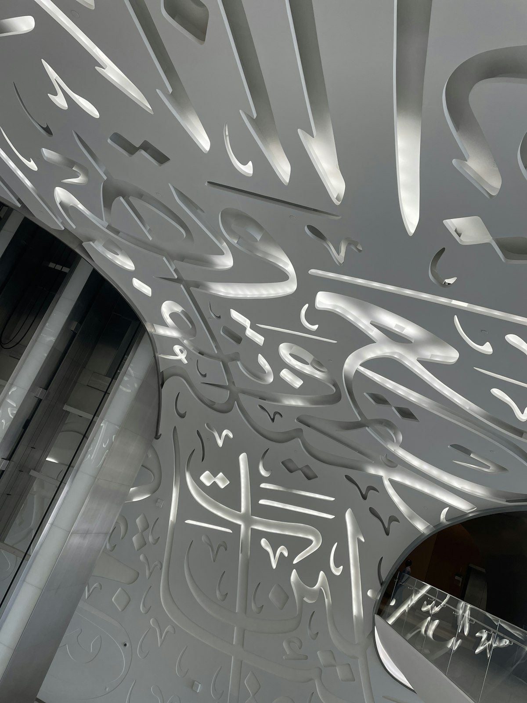

Why 420 Million Arabic Speakers Need This
Arabic (العربية) is the fifth most spoken language in the world and the official language of 26 countries. But it's also one of the hardest languages to type on a Western device. Your iPhone, Windows laptop, or school Chromebook almost certainly has no Arabic keyboard installed — and adding one requires changing system settings that affect your entire device interface.
This is the everyday reality for the 50+ million Arabic speakers living in France, the UK, Germany, the United States, and Canada. They want to message their families for Ramadan, write Eid greetings, or just chat in Arabic — but their devices are set up for English or French. Kactyl solves this without touching a single system setting.
How to Type Arabic Online — Step by Step
- Open the keyboard: Go to kactyl.com/ in any browser — Chrome, Safari, Firefox. No login, no app download. The Arabic keyboard appears in under 2 seconds.
- Choose your input mode: Standard mode shows the Arabic keyboard layout. Franco mode lets you type phonetically in Latin letters (e.g. type "marhaba" → get مرحبا). Pick what feels natural to you.
- Type your message: Click or tap the letters. Arabic text builds right-to-left automatically — the script handles direction for you.
- Add tashkeel if needed: For formal text, religious content, or Quranic quotes, use the vowel marks (تشكيل) button to add fatha, kasra, damma, and other diacritics.
- Copy and paste: Hit the Copy button and paste into WhatsApp, email, Instagram, a Word document, or anywhere Unicode text is accepted.
Franco Arabic Mode — The Secret Weapon for Diaspora Users
If you grew up speaking Arabic but learned to read and write in French or English at school, you know the frustration: you can speak Arabic fluently, but typing in Arabic script is slow and error-prone because you never memorized the keyboard layout.
This is exactly why Kactyl's Franco Arabic mode exists. Type "ktb" and get كتب. Type "3ein" and get عين (the letter 3 represents ع in Franco Arabic). Type "7" for ح, "5" for خ. This system was invented organically by millions of Algerians, Moroccans, and Tunisians online in the early 2000s before Arabic keyboards were common, and it's still how millions of North Africans message each other today.
Cultural Context: How Arabic Is Typed Today
Arabic typing culture varies dramatically by region and generation. In the Gulf (Saudi Arabia, UAE, Kuwait), standard Arabic keyboard input is common on phones since devices ship with Arabic pre-installed. In North Africa — Algeria, Morocco, Tunisia — Franco Arabic (called "Arabizi" or "Arab-Latin") dominates informal digital communication, especially among the under-40 generation.
For Ramadan and Eid, millions of Arabic speakers send greetings like رمضان مبارك (Ramadan Mubarak) and كل عام وأنتم بخير (eid greetings) — these phrases are short and high-value enough that people want to type them in proper Arabic script even if they usually use Franco mode. Kactyl makes this possible in seconds.
For the diaspora in Europe, the UK, and North America, Arabic typing often happens in a mix: WhatsApp with family in proper Arabic, social media in a mix of Arabic and the local language, and work communication in the local language only. Having a quick-access Arabic keyboard that doesn't disrupt your English setup is exactly what this community needs.
Platform-Specific Tips
WhatsApp is the dominant messaging app in every Arab country. Type your message in Kactyl, tap Copy, switch to WhatsApp, long-press the text field, and tap Paste. Works in individual chats, group chats, and WhatsApp Status. Arabic text displays right-to-left correctly for all recipients, regardless of their device.
TikTok
Arabic-language TikTok is massive in the Gulf and North Africa. To add Arabic captions to your video, type the caption text in Kactyl, copy it, then paste it into TikTok's caption field when posting. TikTok fully supports Arabic Unicode text.
Many Arab influencers and diaspora accounts write bilingual bios — Arabic on top, English below. Type your Arabic bio text in Kactyl, copy it, then paste it into the Instagram bio field via Edit Profile. Instagram supports right-to-left Arabic text natively.
| Phrase | Arabic Script | Romanization |
|---|---|---|
| Hello | مرحبا | Marhaba |
| Thank you | شكراً | Shukran |
| How are you? | كيف حالك؟ | Kayfa haluk? |
| I love you | أحبك | Uhibbuk |
3 Common Mistakes When Typing Arabic Online
- Forgetting right-to-left direction: When you paste Arabic text into an app that doesn't automatically detect RTL, the text may align left. In WhatsApp and most messaging apps this is handled automatically. In Google Docs or Word, you may need to manually set paragraph direction to RTL.
- Mixing Arabic and Latin in the same word: Apps handle bidirectional text (mixing Arabic and Latin characters in one line) inconsistently. Type your Arabic sections and English sections separately if you experience display issues.
- Skipping tashkeel for formal text: In casual messaging, tashkeel (vowel marks) are almost never used. But for formal documents, religious texts, or content aimed at learners, missing tashkeel makes text harder to read correctly. Use Kactyl's tashkeel button for these cases.
Pro Tips Exclusive to Kactyl
- Franco mode for speed: If you know Arabic phonetics but not the script layout, Franco mode is 3–4x faster than hunting for letters on the standard keyboard. Most diaspora users never go back once they try it.
- Voice typing workaround: On iPhone, you can use Siri's voice dictation in Arabic — but this requires adding Arabic as a system language. With Kactyl, you don't need that. Type on-screen using Franco mode and get the same result without changing any settings.
- Tashkeel for Quran and formal occasions: Kactyl's tashkeel support lets you type properly voweled Arabic for Quranic verses, formal invitations, and educational content — something most online keyboards omit entirely.
Frequently Asked Questions